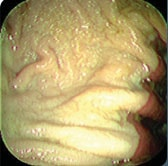
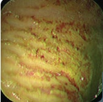
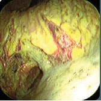

Website vergroten/verkleinen: cltr-knop + scrollen
Maagzweer (gastritis)
| Wat is een maagzweer | |||

|
De maag van het paard is een gevoelig orgaan. Wordt de maagzuurhuishouding uit evenwicht gebracht, kan het maagslijmvlies beschadigen. Een defect aan het maagslijmvlies kan ontstekingen veroorzaken. Chronische ontstekingen beschadigen de maagwand steeds dieper wat kan resulteren in een maagzweer waarbij de ernst afhankelijk is van de grootte en diepte van de beschadiging en van de hoeveelheid beschadigingen. Een maagzweer kan zelfs een gat in de maagwand veroorzaken (vooral bij veulens) wat dodelijk is. Maagzweren kunnen zich bevinden van de gehele maag tot in het eerste gedeelte van de darm aan toe. Ze komen het meeste voor in het bovenste gedeelte van de maag. Maagzweren komen vaker voor dan gedacht. Diverse onderzoeken tonen aan dat 93% van de volbloeden in training, 60% van de sportpaarden (dressuur, eventing en springpaarden) en meer dan 50% van de veulens, in meer of mindere mate last heeft van maagzweren. |
||
|
 Fase 0  Fase 1  Fase 2 |
Fase 0 De maagbekleding is intact en er zijn geen verschijnselen van rode verkleuring Fase 1 De maagbekleding is intact en er zijn verschijnselen van rode verkleuring Fase 2 De maag vertoont kleine op zichzelf staande maagzweren of meervoudige maagzweren Fase 3 De maag vertoont grote op zichzelf staande maagzweren of meervoudige maagzweren Fase 4 De maag vertoont uitgebreide maagzweren; vaak overgaand in plaatsen van diepe zweren. |
 Fase 3  Fase 4
|
|
terug naar boven
| Symptomen maagzweer | ||
|
Zowel chronische als acute maagbeschadigingen geven doorgaans pijnklachten. De intensiteit van de pijn lijkt echter zelden gecorreleerd aan de ernst van de maagbeschadiging: kleine zweren zijn soms extreem pijnlijk, terwijl grote maagzweren ook wel asymptomatisch aanwezig zijn. De symptomen van een maagzweer zijn veelal vaag en zijn daardoor niet gemakkelijk te herkennen. Toch is er een aantal waarschuwingssignalen dat wijst op de aanwezigheid van een maagzweer: • veranderingen in gedrag • afnemende prestaties • verminderde eetlust of langzaam eten • overmatig speekselen • minder drinken • sloomheid • gewichtsverlies • doffe vacht • regelmatig terugkerende milde koliek Veulen • tandenknarsen • diarree • onregelmatig drinken • extreem veel liggen • overmatig speekselen • meer plassen • op de rug liggen |
||
terug naar boven
| Mogelijke oorzaken van een maagzweer | ||||
|
Algemene oorzaken • stress - vervoer - spenen van een veulen - inrijden van een jong dier - langdurig verblijf in de stal - het voerregime - narcose • voedselmanagement • training en intensieve beweging • slecht gebit • beschadiging maagslijmvlies door de grof stro • maagparasieten (Gasterophiluslarven) • bepaalde medicijnen Waarschijnlijke oorzaken • pijn • onderliggende ziekte • dracht • erfelijkheid • bacteri�le infectie van maagslijmvlies |
||||
|
Kort overzicht van de werking van de maag
Gastrine De werking van de maag wordt sterk beïnvloed door het hormoon gastrine dat in de slijmvlieslaag in het onderste deel van de maag wordt geproduceerd en via de bloedbaan bij de klieren terecht komt. Gastrine heeft meerdere functies: het verhoogt het aantal spiersamentrekkingen in het onderste deel van de maag, het stimuleert de uitscheiding van zoutzuur en regelt de aanmaak van pepsinogeen, een enzym dat een rol vervult bij de afbraak van eiwitten. Meer lezen.......... |
||||
|
Maagzweren veroorzaakt door dieet • lege maag Op stal krijgt een paard maar 2 of 3 keer per dag eten en is de maag vaak leeg terwijl de aanmaak van het maagzuur door blijft gaan. Dat kan tot een maagzweer leiden in het onderste gedeelte van de maag. Tevens mist de maag de beschermende laag voedsel op de bodem die het maagzuur tevens absorbeert en neutraliseert. Het erg zure maagzuur kan nu, vooral in geval van beweging (maar ook liggen), vrij eenvoudig in het bovenste gedeelte van de maag komen die niet beschermd is tegen maagzuur. • krachtvoer (geconcentreerd voer) Geef je vezelarm voer (b.v. biks) in een lege maag, dan ook ontbreekt de beschermende voedselbrij van ruwvoer op de bodem van de maag en kan de zure inhoud zich eenvoudig door de hele maag bewegen. Ook nu komt er dus een zure maaginhoud tegen de kwetsbare wand van het bovenste gedeelte van de maag. Tevens lijken de granen de toename van het hormoon pepsine te stimuleren waardoor de productie van maagzuur gestimuleerd wordt. Na het eten van geconcentreerd voer zal het paard wellicht een tijd lang zonder ruwvoer staan terwijl hij maagzuur blijft produceren. • te veel voedsel in te korte tijd De maag van het paard is relatief klein. Met teveel aanbod van voedsel in een te korte tijd, wordt de maag meer dan tweederde gevuld. Ook nu komt er dus een zure maaginhoud tegen de kwetsbare wand van het bovenste gedeelte van de maag. Maagzweren veroorzaakt door intensieve training Het bloedtoevoer naar de maag (en de gastrine) neemt toe door training waardoor de zuurgraad in de maag toeneemt, terwijl de toegenomen druk van de buik tijdens de training het zoutzuur naar het gevoelige bovenste gedeelte van de maag stuwt. Het veulen Een veulen is extra gevoelig in de eerst paar maanden van zijn leven. Het is bekend dat veulens een aanzienlijke hoeveelheid maagzuur afscheiden als ze 2 dagen oud zijn. Met als resultaat van tijd tot tijd een hoge zuurgraad in de maaginhoud tijdens de zoogperiode. Daarbij is een veulen extra gevoelig voor schade aan de darmwand omdat deze minder diepe plooien bevat dan een volwassen paard. |
||||

terug naar boven
| Diagnose van een maagzweer | |
|
Er bestaan geen "typische maagzweersymptomen", waardoor het stellen van een diagnose niet eenvoudig is. Een diagnose wordt gebaseerd op herkenning van de symptomen en een aanvullende "gastrocopie". Zie de video. De gastrocopie is een momentopname en maagzweren ontwikkelen zich snel. Als er vandaag geen maagzweren gevonden worden, wil het niet zeggen dat er de volgende dag geen maagzweren zullen zijn. |
|
terug naar boven
| Behandeling maagzweer | |
|
Medicijnen die de maagzuurproduktie blokkeren en daardoor minder irritatie op de slijmvliesbeschadigingen. |
terug naar boven
| Voorkomen maagzweer | |
|
Verminderen van stresssituaties Te denken valt aan: • meer contact tussen paarden onderling • onbeperkte toegang tot gras en/of hooi • beperkt of geen graan voeren • aanpassing van het rantsoen • meer voermomenten op een dag • soms preventieve medicatie Ruwvoer • stimuleert de speekselproduktie welke de zuurgraad doet dalen • absorbeert maagzuur zodat de zuurgraad in de maag daalt • vormt een laag op de bodem zodat het voedsel niet door de maag klotst en in het kwetsbare bovenste gedeelte terechtkomt. • de voedselbrij neemt ander voedsel, zoals krachtvoer, in zich op zodat deze zich niet door de hele maag kan bewegen en het voedsel niet te snel de maag verlaat |
terug naar boven
| Eventuele gevolgen maagzweer | |
|
• bloedarmoede • koliek • gat in de maagwand Bloedarmoede Open maagzweren kunnen bloeden. Dat betekent bloedverlies voor het paard. Als deze toestand lang aanhoudt kan bloedarmoede ontstaan. Gat in de maagwand In het ergste geval kan er een gat in de maagwand ontstaan (vooral bij veulens). Hierdoor ontstaan inwendige bloedingen en/of een infektie in de buikholte die tot de dood kunnen leiden. |
terug naar boven
| Dressuuroefeningen in zakformaat | |

|
Wil je verschillende dressuuroefeningen in een handig boekje? Een leuk geschenk voor jezelf, je vriend(in) of familielid. Lees meer ............ |
| Springoefeningen in zakformaat | |

|
Wil je verschillende springoefeningen en enkele parcoursschetsen in een handig boekje? Een leuk geschenk voor jezelf, je vriend(in) of familielid. Lees meer ............ |
terug naar boven